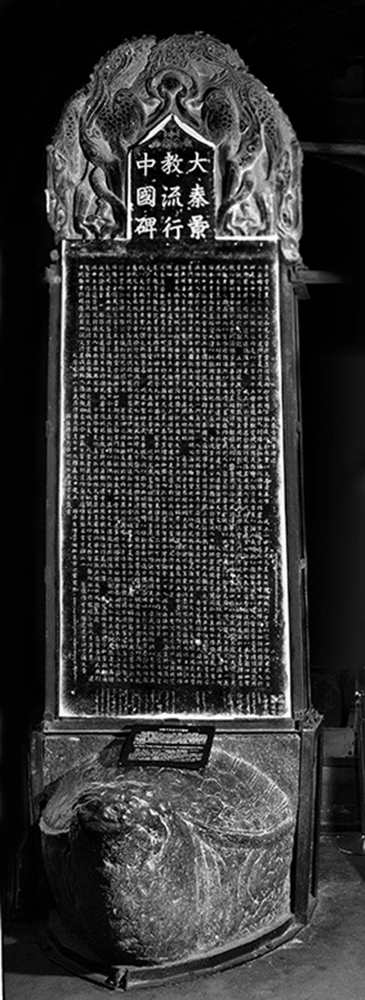
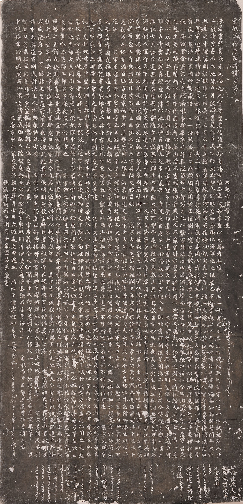

书中反复出现的那块碑，全名《大秦景教流行中国碑》，今天立在西安碑林博物馆第二展室。小说里的伊斯、景净、宁恕、吕秀岩，碑上都有名字；序章里它出土，第五十八章里它入土，中间这几十年的事，也大半是从这块碑上生发出来的。这里把碑的基本情况、碑文原文和两张图片附在后面，供读者对照。
一、碑的大略
碑立于唐德宗建中二年正月初七，公元七八一年。石质为黑色石灰岩，螭首龟趺，通高三百五十余厘米，宽约一米，厚二十余厘米。碑额刻"大秦景教流行中国碑"九个楷书大字，分三行，每行三字；额顶的尖角里，刻着一个立在莲花上的十字，四周饰以云纹。
碑文由大秦寺僧景净撰写，朝议郎、前行台州司士参军吕秀岩书丹，楷书三十二行，满行六十二字，汉字一千七百余。正文之后有颂，颂之后是立碑年月和一长串僧人的名字。碑的下端和左右两侧，另刻有叙利亚文，记的是立碑的年份（希腊纪年一〇九二年，即公元七八一年）、当时在位的牧首，以及七十来位教士的叙利亚名字和职衔，许多人的汉名和叙利亚名并列。
碑文大体分作三层：先讲景教的教义，从创世、人的堕落讲到弥施诃降生、升天；再讲景教入唐一百四十多年的历史，从贞观九年阿罗本到长安，历太宗、高宗、玄宗、肃宗、代宗，一直写到德宗建中年间；最后用一大段文字表彰大施主伊斯，说他跟随郭子仪平叛，"为公爪牙，作军耳目"，又散财修寺，每年聚集四寺僧众，"餧者来而飯之，寒者来而衣之，病者療而起之，死者葬而安之"。

二、碑与书中的人
碑上的叙利亚文，替小说里的几个人留下了另一个名字。
伊斯的叙利亚名，学者一般读作耶兹卜兹（Yazdbozid）。碑上说他是京城的司铎和乡主教，已故司铎米利斯之子，来自吐火罗的缚喝城，也就是今天阿富汗北部的巴尔赫。书里伊斯的身世、他父亲米利斯的名字，都从这里来。
景净的叙利亚名叫亚当，碑上称他为司铎、乡主教，兼"中国的教父"（papash of Sinistan）。碑文就是他写的。
碑上叙利亚文题名的牧首，是哈南尼稣二世，汉文碑文末尾"时法主僧宁恕知东方之景众也"一句里的"宁恕"，指的也是他，书中的牧首宁恕就从这里来。他其实在立碑前一年已经去世，提摩太一世已经接任，可这个消息还没有从巴格达传到长安。于是一块碑上，刻着一个已经不在世的牧首的名字。书里第四十八章写的就是这件事。
碑上汉字名单里还有一位"僧景福"。书里第三代的景福，是景净的门生，名字与他相同。
三、碑的下落
碑大约在会昌年间禁断外来宗教时被埋入地下，具体年份已不可考。明天启三年（一说天启五年）前后，在西安府城西郊出土，出土经过、李之藻与耶稣会士的考释，详见本书序章。出土后，碑被移到附近的崇仁寺内，建亭保护。清咸丰九年（一八五九年），杭州人韩泰华来访，见碑上字画完好，出资重造碑亭，并在碑侧刻了题记。光绪三十三年（一九〇七年），丹麦人何乐模来西安，想把碑买下运往欧洲，未能如愿，只仿刻了一块复制品运走。同年，陕西地方官府把原碑移入西安碑林，保存至今。
四、碑文
下面的碑文，录自《大正新修大藏经》第五十四册第二一四四号，依据 CBETA 电子佛典的数字版本。原碑没有标点，这里沿用大正藏的句读，个别明显的断句错误和几处异文作了订正：
- "阿罗诃欤判。十字"改为"阿罗诃欤。判十字"；
- "总玄摳"作"总玄枢"；
- "腾淩激曰"作"腾凌激日"；
- "大耀森文曰"作"大耀森文日"。
文字保留繁体，碑中缺损的字以"□"表示。清人咸丰年间所刻的碑侧题记，不录。
大秦景教流行中國碑頌并序
大秦寺僧景淨述
粵若常然真寂。先先而無元。窅然靈虛。後後而妙有。總玄樞而造化。妙眾聖以元尊者。其唯我三一妙身無元真主阿羅訶歟。判十字以定四方。鼓元風而生二氣。暗空易而天地開。日月運而晝夜作。匠成萬物然立初人。別賜良和令鎮化海。渾元之性虛而不盈。素蕩之心本無希嗜。洎乎娑殫施妄。鈿飾純精。間平大於此是之中。隙冥同於彼非之內。是以三百六十五種。肩隨結轍。競織法羅。或指物以託宗。或空有以淪二。或禱祀以邀福。或伐善以矯人。智慮營營。恩情役役。茫然無得。煎迫轉燒。積昧亡途久迷休復。於是我三一分身景尊彌施訶。戢隱真威。同人出代。神天宣慶。室女誕聖。於大秦景宿告祥。波斯覩耀以來貢。圓二十四聖有說之舊法。理家國於大猷。設三一淨風無言之新教。陶良用於正信。制八境之度。鍊塵成真。啟三常之門。開生滅死。懸景日以破暗府。魔妄於是乎悉摧。棹慈航以登明宮。含靈於是乎既濟。能事斯畢。亭午昇真。經留二十七部。張元化以發靈關。法浴水風。滌浮華而潔虛白。印持十字。融四照以合無拘。擊木震仁惠之音。東禮趣生榮之路。存鬚所以有外行。削頂所以無內情。不畜臧獲。均貴賤於人。不聚貨財示罄遺於我。齋以伏識而成。戒以靜慎為固。七時禮讚。大庇存亡。七日一薦。洗心反素。真常之道。妙而難名。功用昭彰。強稱景教。
惟道非聖不弘。聖非道不大。道聖符契。天下文明。
太宗文皇帝。光華啟運。明聖臨人。大秦國有上德。曰阿羅本。占青雲而載真經。望風律以馳艱險。貞觀九祀至於長安。帝使宰臣房公玄齡總仗西郊賓迎入內。翻經書殿。問道禁闈。深知正真。特令傳授。
貞觀十有二年秋七月。詔曰道無常名。聖無常體。隨方設教。密濟群生。大秦國大德阿羅本。遠將經像來獻上京。詳其教旨。玄妙無為。觀其元宗。生成立要。詞無繁說。理有忘筌。濟物利人。宜行天下。所司即於京義寧坊造大秦寺一所。度僧二十一人。宗周德𬽐。青駕西昇。巨唐道光。景風東扇。旋令有司將帝寫真轉摸寺壁。天姿汎彩。英朗景門。聖迹騰祥。永輝法界。
案西域圖記及漢魏史策。大秦國南統珊瑚之海。北極眾寶之山。西望仙境花林。東接長風弱水。其土出火浣布．返魂香．明月珠．夜光璧。俗無寇盜。人有樂康。法非景不行。主非德不立。土宇廣濶。文物昌明。
高宗大帝。克恭纘祖。潤色真宗。而於諸州各置景寺。仍崇阿羅本為鎮國大法主。法流十道。國富元休。寺滿百城。家殷景福。
聖曆年。釋子用壯。騰口於東周。先天末。下士大笑。訕謗於西鎬。有若僧首羅含．大德及烈．並金方貴緒．物外高僧。共振玄網。俱維絕紐。
玄宗至道皇帝。令寧國等五王親臨福宇建立壇場。法棟暫橈而更崇。道石時傾而復正。
天寶初。令大將軍高力士送五聖寫真寺內安置。賜絹百匹。奉慶睿圖。龍髯雖遠。弓劍可攀。日角舒光。天顏咫尺。
三載大秦國有僧佶和。瞻星向化。望日朝尊。詔僧羅含僧普論等一七人。與大德佶和。於興慶宮修功德。於是天題寺牓。額戴龍書。寶裝璀翠。灼爍丹霞。睿扎宏空。騰凌激日。寵賚比南山峻極。沛澤與東海齊深。道無不可。所可可名。聖無不作。所作可述。
肅宗文明皇帝。於靈武等五郡。重立景寺。元善資而福祚開。大慶臨而皇業建。
代宗文武皇帝。恢張聖運。從事無為。每於降誕之辰。錫天香以告成功。頒御饌以光景眾。且乾以美利故能廣生。聖以體元故能亭毒。
我建中聖神文武皇帝。披八政以黜陟幽明。闡九疇以惟新景命。化通玄理。祝無愧心。至於方大而虛。專靜而恕。廣慈救眾苦。善貸被群生者。我修行之大猷。汲引之階漸也。若使風雨時。天下靜。人能理。物能清。存能昌。歿能樂。念生響應。情發目誠者。我景力能事之功用也。
大施主金紫光祿大夫。同朔方節度副使。試殿中監。賜紫袈裟僧伊斯。和而好惠。聞道勤行。遠自王舍之城。聿來中夏。術高三代。藝博十全。始効節於丹庭。乃策名於王帳。中書令汾陽郡王郭公子儀。初總戎於朔方也。肅宗俾之從邁。雖見親於臥內。不自異於行間。為公爪牙。作軍耳目。能散祿賜。不積於家。獻臨恩之頗黎。布辭憩之金罽。或仍其舊寺。或重廣法堂。崇飾廊宇。如翬斯飛。更効景門。依仁施利。每歲集四寺僧徒。虔事精供。備諸五旬。餧者來而飯之。寒者來而衣之。病者療而起之。死者葬而安之。清節達娑。未聞斯美。白衣景士。今見其人。願刻洪碑。以揚休烈。詞曰：
真主無元。 湛寂常然。 權輿匠化。 起地立天。 分身出代。 救度無邊。 日昇暗滅。 咸證真玄。
赫赫文皇。 道冠前王。 乘時撥亂。 乾廓坤張。 明明景教。 言歸我唐。 翻經建寺。 存歿舟航。 百福偕作。 萬邦之康。
高宗纂祖。 更築精宇。 和宮敞朗。 遍滿中土。 真道宣明。 式封法主。 人有樂康。 物無災苦。
玄宗啟聖。 克修真正。 御牓揚輝。 天書蔚映。 皇圖璀璨。 率土高敬。 庶績咸熈。 人賴其慶。
肅宗來復。 天威引駕。 聖日舒晶。 祥風掃夜。 祚歸皇室。 祅氛永謝。 止沸定塵。 造我區夏。
代宗孝義。 德合天地。 開貸生成。 物資美利。 香以報功。 仁以作施。 暘谷來威。 月窟畢萃。
建中統極。 聿修明德。 武肅四溟。 文清萬域。 燭臨人隱。 鏡觀物色。 六合昭蘇。 百蠻取則。
道惟廣兮應惟密。 強名言兮演三一。 主能作兮臣能述。 建豐碑兮頌元吉。
大唐建中二年歲在作噩太蔟月七日大耀森文日建立 時法主僧寧恕知東方之景眾也
朝議郎前行台州司士參軍呂秀巖書
助撿挍試太常卿賜紫袈裟寺主僧業利
撿挍建立碑僧行通
僧靈寶 僧內澄 僧光正 僧和明 僧立本 僧法源 僧審慎 僧寶靈 僧玄覽 僧景通 老宿耶俱摩 僧明一 僧保國 僧志堅 僧義濟 僧玄德 僧利用 僧元□ 僧奉真 僧至德 僧和光 僧景福 僧太和 僧崇德 僧德建 僧去甚 僧廣德 僧福壽 僧□□ 僧寶達 僧□明 僧和吉 僧□□ 僧遙□ 僧日進 □□輪 僧□和 僧崇敬 僧惠通 僧□□ □居信 僧文貞 僧文明 僧昭德 僧曜原 僧仁□ 僧玄真 僧明泰 僧利□ 僧敬德 僧元□ 僧乾□ 僧守一 僧光□ 僧聞順 僧普濟 僧凝□ 僧冲和 僧英德 僧靈德 僧靈壽 僧還淳 □敬真
